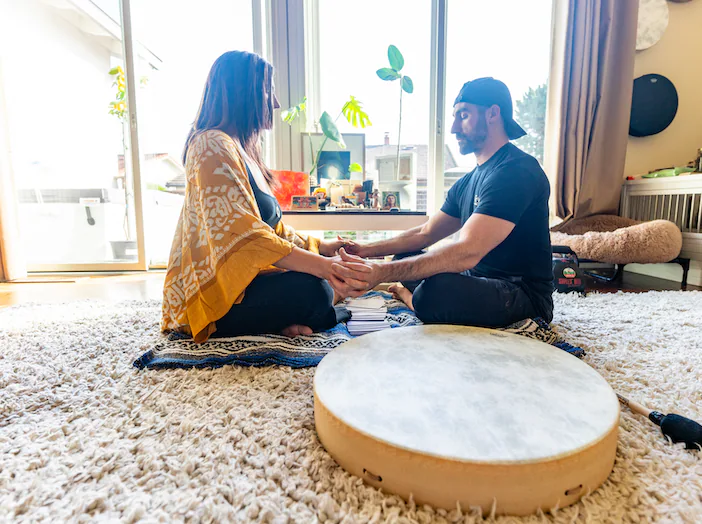

B1064 · Reflections on Parenthood: Lessons Learned and Love Deepened
Hey {first_name},
I wanted to share something that's been on my heart – some wisdom that's really hit home for me as a new parent, courtesy of my good friend Dr. Nathan Riley.
Nathan always said that while the birth experience would be unforgettable, the real test lies in how my wife Lauren and I would navigate our relationship as new parents.
And you know what? He hit the nail on the head.
Now, don't get me wrong, the birth of our little Luca was pure magic. But since then, we've been swept up in the whirlwind of sleepless nights, endless baby duties, and the shift in responsibilities - here is where I've found Nathan's words ringing truer than ever.
Despite the challenges, our love has grown in ways I never could have imagined.
In those tough moments, when exhaustion sets in, and when old patterns re-emerge, there still remains a deep bond, one of safety, love and respect.
Our relationship has become one of my greatest teachers. It inspires me to be better, and reminds me of the immense responsibility I have as the leader of our family.
 Sure, there are times when I just want to crawl into a hole and shut down (believe me, it happens more often than I'd like to admit), but I've committed myself to practicing keeping my heart open, even when it feels impossible.
And through it all, I'm learning the importance of repair in relationships.
In a world where conflict is inevitable, knowing how to "fight fair" and mend things afterward is invaluable.
As I reflect on it all, being a father and a husband is a calling that constantly reminds me of the love, respect, and dedication I have for my family and the path we're on together.
So here's to embracing the challenges, learning from the stumbles, and being humbled by the incredible power of love.
With gratitude and an open heart, Mike |